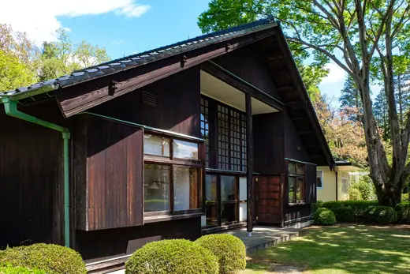

Kunio Maekawa buildings 13
Sort

House of Kunio Maekawa1942 · Koganei Okayama Prefectural Government Office Main Building1955 · Okayama
Okayama Prefectural Government Office Main Building1955 · Okayama Tokyo Metropolitan Art Museum1975 · Tokyo
Tokyo Metropolitan Art Museum1975 · Tokyo Hirosaki City Museum1977 · Hirosaki
Hirosaki City Museum1977 · Hirosaki Yamanashi Prefectural Museum of Art1978 · Kofu
Yamanashi Prefectural Museum of Art1978 · Kofu Miyagi Museum of Art1981 · Sendai
Miyagi Museum of Art1981 · Sendai International House of Japan1955 · Tokyo
International House of Japan1955 · Tokyo Tokyo Bunka Kaikan1961 · Tokyo
Tokyo Bunka Kaikan1961 · Tokyo National Museum of Modern Art, Tokyo1969 · Tokyo
National Museum of Modern Art, Tokyo1969 · Tokyo Kumamoto Prefectural Museum of Art1976 · Kumamoto
Kumamoto Prefectural Museum of Art1976 · Kumamoto Museum of East Asian Art1977 · Cologne
Museum of East Asian Art1977 · Cologne Fukuoka Art Museum1979 · Fukuoka
Fukuoka Art Museum1979 · Fukuoka Rohm Theatre Kyoto2016 · Kyoto
Rohm Theatre Kyoto2016 · Kyoto